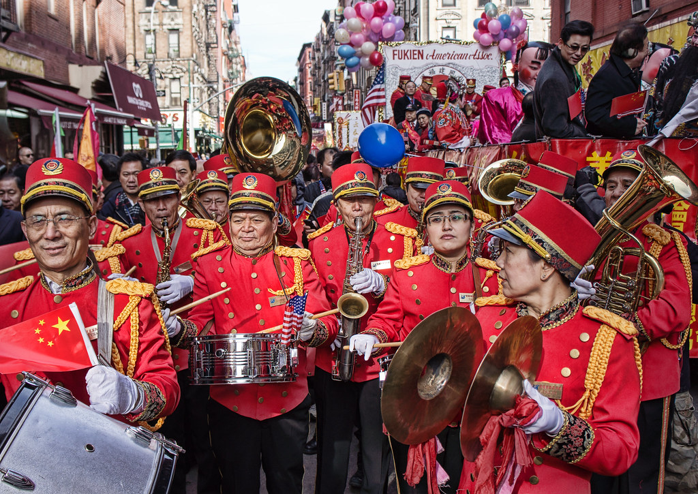

Музыка · 31-бөлім · Марш Music · Section 31 · The March Музыка · Раздел 31 · Марш
🚶 Марш — анық, ұйымдасқан адым үшін музыка: «ілесіп», бір ырғақпен жүруге көмектеседі. 🚶 A march is music for a clear, organised step: it helps you walk "in step", in time. 🚶 Марш — музыка для чёткого, организованного шага: помогает идти «в ногу».
Марш — анық, ұйымдасқан адым үшін музыка: ол адамдарға «ілесіп», бір ырғақпен жүруге көмектеседі. A march is music for a clear, organised step: it helps people walk "in step", all in the same rhythm. Марш — музыка для чёткого, организованного шага: помогает людям идти «в ногу», в едином ритме.
Маршта анық ырғақ болады, өлшемі әдетте 2/4 немесе 4/4; жиі пунктирлі ырғақ қолданылады. A march has a clear rhythm; its meter is usually 2/4 or 4/4, and a dotted rhythm is often used. У марша ясный ритм, размер обычно 2/4 или 4/4; часто используется пунктирный ритм.
Әр тактта күшті үлеске (екпін) басым: дәл осы екпін аяқтың адымын белгілейді. Each measure stresses the strong beat (accent): this very accent marks the footstep. В каждом такте выделена сильная доля (акцент): именно этот акцент отмечает шаг ноги.
💡 Маршпен жүру оңай: «РАЗ-екі, РАЗ-екі» — әр «РАЗ»-да сол аяқ басылады. 💡 It is easy to walk to a march: "ONE-two, ONE-two" — on every "ONE" the left foot steps down. 💡 Под марш легко идти: «РАЗ-два, РАЗ-два» — на каждый «РАЗ» опускается левая нога.
Әскери (саптық) марш Military (drill) march Военный (строевой) марш
Сергек, қуатты; жауынгерлердің бірге адымдауы үшін. Brisk and energetic; for soldiers to step together. Бодрый, энергичный; чтобы солдаты шагали вместе.
Спорттық марш Sports march Спортивный марш
Мерекелік, салтанатты шерулер (парадтар) үшін. Festive, for celebratory processions (parades). Праздничный, для торжественных шествий (парадов).
Жерлеу (қаралы) марш Funeral march Траурный (похоронный) марш
Баяу, қайғылы, минорлы; қоштасу үшін. Slow, mournful, in a minor key; for farewells. Медленный, скорбный, минорный; для прощания.
Балалар маршы Children's march Детский марш
Жеңіл, ойыншықтай, көңілді. Light, toy-like, cheerful. Лёгкий, игрушечный, весёлый.
Салтанатты / үйлену маршы Solemn / wedding march Торжественный / свадебный марш
Мерекелі, салтанатты; маңызды сәттер үшін. Festive and solemn; for important moments. Праздничный, торжественный; для важных моментов.
Бәріне ортақ Common to all Общее для всех
Анық, біркелкі ырғақ пен «раз»-ға екпін — адымды ұстайды. A clear, even rhythm and an accent on "one" — keeping the step. Чёткий, равномерный ритм и акцент на «раз» — держат шаг.

| БелгіSignПризнак | СипаттамаDescriptionОписание |
|---|---|
| ЫрғақRhythmРитм | анық, біркелкіclear and evenчёткий, равномерный |
| Қарқын (темп)TempoТемп | орташа (баяу — жерлеу маршта)moderate (slow in a funeral march)умеренный (медленный — в траурном) |
| ӨлшемMeterРазмер | 2/4 немесе 4/42/4 or 4/42/4 или 4/4 |
| ЕкпінAccentАкцент | «раз»-ға (күшті үлеске)on "one" (the strong beat)на «раз» (сильную долю) |
📌 Марш — би (танец) сияқты, тек би емес адым үшін: оның басты міндеті — біркелкі, ұйымдасқан жүрісті қамтамасыз ету. 📌 A march is like a dance, but for stepping rather than dancing: its main job is to keep walking even and organised. 📌 Марш — как танец, но для шага, а не для пляски: его главная задача — обеспечить ровную, организованную ходьбу.